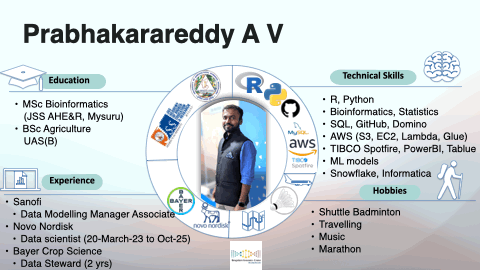

Clear, Practical Statistics Notes
Concise explanations, worked examples, and lightweight interactive tools to help you understand statistics faster.
Hi — I'm Prabhakarareddy A V

MSc Bioinformatics • Data Scientist • Analytics & ML
I design reproducible data pipelines and analytical solutions to convert biological and agricultural data into clear insights. My work spans data modelling, ML deployment, interactive visualization, and building tools that help teams make confident, evidence-driven decisions.
Education
- MSc Bioinformatics — JSS AHE&R, Mysuru
Experience
- Sanofi — Data Modelling Manager Associate
- Novo Nordisk — Data Scientist (Mar 2023 – Oct 2025)
- Bayer Crop Science — Data Steward (2 yrs)
Technical Skills
- R, Python, SQL, GitHub
- AWS (S3, EC2, Lambda, Glue), Snowflake
- Spotfire, PowerBI, Tableau, Matplotlib, Seaborn ML frameworks (scikit-learn, TensorFlow) Agentive AI (LangChain, LlamaIndex, LangGraph)
- Data pipelines, reproducible workflows
Chapters
Structured notes covering fundamentals and applied topics.
- Introduction
- Basic Terminology
- Classification
- Tabulation
- Frequency Distribution
- Diagramatic Representation
- Graphical Representation of Data
- Measures of Central Tendency
- Measures of Dispersion
- Measures of Skewness and Kurtosis
- Probability
- Theoretical Probability Distributions
- Sampling Theory
- Testing of Hypothesis
- Small Sample Tests
- Correlation
- Regression
- Analysis of Variance (ANOVA)
Insights
Visualization preview
About this resource
Designed for students and practitioners: bite-sized notes, worked examples, and small interactive tools to build intuition quickly.